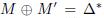
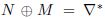
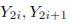
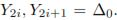

XSL i Boomerang kriptoanaliza
Mirna Vuković, Damjan Hrgar
Sadržaj |
Uvod
Ljudi su kroz povijest koristili razne načine i metode kojima su pokušavali zaštiti tajnost važnih podataka i informacija koje su se svakodnevno izmjenjivale. Te razne metode i načini odnosili su se na jednostavne algoritme koji su bili ubrzo razbijeni. Kako se znanost razvijala tako su se razvijali algoritmi koji su sadržavali složenije proračune. Za razbijanje takvih algoritama, zahtijevalo je velike memorijske i vremenske resurse. Međutim, paralelno s pojavom složenih kriptografskih algoritama, javljaju se i metode koje mogu dovesti do otkrivanja informacija za dekriptiranje šifriranih tekstova kako bi se uočila neka svojstva koja je moguće iskoristiti za dekriptiranje. Takve metode pripadaju u znanstvenu disciplinu koja se naziva kriptoanaliza, a temelji se na poznavanju sustava i pronalaženju tajnog ključa.
--Mirna 14:29, 12. siječnja 2013. (CET)
Kriptoanaliza
Kriptoanaliza (grčka riječ kryptós – skriven i analýein – odriješiti) je znanstvena disciplina koja proučava metode otkrivanja značenja kriptiranih informacija bez pristupa tajnim informacijama za dekriptiranje. Takve metode se obično temelje na poznavanju rada sustava i pronalaženju tajnog ključa. Kriptoanaliza se ponekad odnosi na pokušaj zaobilaženja sigurnosti kriptografskih algoritama ili protokola, a ne samo kriptografske zaštite.
Koraci u kriptoanalizi:
[1]Odrediti jezik na kojem je izvorna poruka pisana. Odnosi se na vlastitu procjenu odnosno intuiciju i zdrav razum. U slučaju ako se zna tko je poruku poslao ili kome je slana može se zaključiti da je na jeziku koji govori pošiljatelj ili primatelj. Taj prvi korak je vrlo bitan jer se na temelju pretpostavke o jeziku rade mnoge druge pretpostavke u idućim koracima.
[2]Identificirati sustav enkripcije. Ovaj korak zahtijeva poznavanje različitih sustava enkripcije. O kojem se sustavu radi potrebno je zaključiti na temelju nekih detalja i pravilnosti u šifrantu. Nakon što se identificira sustav enkripcije može se razmišljati o sljedećem koraku. Primjerice, je li riječ o supstitucijskoj ili transpozicijskoj šifri? Tek tada se može početi razmišljati o sljedećem koraku.
[3] Potraga za ključem. Nakon spoznaje o kojem se sustavu radi, bez poznavanje ključa ta spoznaja puno ne znači. Identifikacijom sustava šifriranja otvara se mogućnost tzv. „brute force“ napada na šifrat u kojem se isprobava što veći broj ključeva dok ne naiđemo na jedan koji dešifriranu poruku čini smislenom. Međutim, ovaj napad bi trajao predugo da bi ljudi koji su orginalnu poruku poslali bili među živima kada bi se poruka konačno razbila. Ovaj korak je najteži, ali i s najviše rezultata kada ga se uspješno završi.
Kriptoanaliza potiče iz 650-ih godina kada su teolozi pokušali verificirati autentičnost rukopisa uspoređujući konzistentnost različitih riječi. Prva prava kriptoanaliza je zabilježena u Europi. 1500.godine u Engleskoj je bio najpoznatiji uspjeh kriptoanalize koji je doveo do uhićenja i smaknuća škotske Kraljice Marije zbog izdaje. Kasnije, 1917.godine zabilježeno je razbijanje Zimmermannovog telegrama za vrijeme I. svjetskog rata. Povijesno najuobičajeni postupak kriptoanalize je frekvencijska analiza. Njome se izbroji količina svakog slova ili simbola u šifranom tekstu i usporedi se sa frekvencijom slova u tekstu pisanom jezikom. Osim frekvencijske, druga poznata metoda je traženje uzoraka jezika. Svaki jezik ima specifične uzorke te su time najkorisniji oni koji se ponavljaju.
--Mirna 14:30, 12. siječnja 2013. (CET)
Vrste kriptoanalize
Postoji nekoliko vrsta kriptoanaliza: klasična kriptoanaliza, linearna kriptoanaliza, diferencijalna kriptoanaliza… U ovom projektu posvetit ćemo se diferencijalnoj kriptoanalizi na temelju koje se razvio Bumerang i XSL napad.
Diferenacijalna kriptoanaliza
Diferencijalnu kriptoanaliza je prvi put predstavio Murphy u napadu na FEAL-4, a kasnije su ju unaprijedili Biham i Shamir na CRYPTO '90 kao napad na DES. To je napad koji je primjenjiv na iterativne blokovne kriptosustave odnosno u osnovi napad odabranim otvorenim tekstom i oslanja se na analizu razlika između dva otvorena teksta kriptiranim istim ključem. Neke razlike između otvorenih tekstova napadaču više odgovaraju od ostalih pa je zbog toga diferencijalna analiza svrstana u kategoriju napada sa odabranim otvorenim tekstom ( engl. chosen plaintext attack) ali se uz dovoljne količine tekstova može svrstati i u kategoriju napada sa poznatim otvorenim tekstom ( engl. known -plaintext attack).Upotrebljava se na blokovske šifre, hash funkcije i šifre nizova. U slučaju ako se radi o blokovskim šiframa, metoda se odnosi na skup tehnika za praćenje razlika kroz mrežu transformacija. Time se pokušava otkriti gdje šifra pokazuje ponašanje koje nije pseudoslučajno kak bi se to ponašanje iskoristilo za otkrivanje tajnog ključa.
--Mirna 14:30, 12. siječnja 2013. (CET)
Boomerang napad
„Boomerang napad“ je diferencijalni napad koji pokušava generirati kvartet strukture srednje vrijednosti kroz polovicu šifre. Napad razmatra četiri obična teksta: P, P´, Q i Q´, zajedno s njihovim odgovarajućim tekstom šifre: C, C´, D i D´. predstavlja operaciju šifriranja i razlaže šifru na: gdje predstavlja prvu polovicu šifre, a predstavlja drugu polovicu šifre. Koristit će se različiti znakovi karakteristika, za dok će sa  biti označen . Par P, P´ označavat će oznake za dok će parove P,Q i P´,Q´ označavat oznake za .Par Q,Q´ označavat će se za .
Uzme li se u obzir srednja vrijednost nakon polovice krugova, te kada se prethodne tri karakteristike zadrže, slijedi:
biti označen . Par P, P´ označavat će oznake za dok će parove P,Q i P´,Q´ označavat oznake za .Par Q,Q´ označavat će se za .
Uzme li se u obzir srednja vrijednost nakon polovice krugova, te kada se prethodne tri karakteristike zadrže, slijedi:
{kind=link}
{kind=link}
{kind=link}
{kind=link}
{kind=link}
{kind=link}
{kind=link}
{kind=link}
odnosno, dobiven je uvjet potreban za inverzno pokretanje karakteristike prve polovice šifre. Nakon što i to obilježje postoji, doći će do iste diferencije u kliznom tekstu Q,Q´, koja postoji i u orginalnom tekstu P,P´. Dakle, ovo je razlog imenu „boomerang napad“: ukoliko se postavi pravilno, uvijek se vraća natrag. Pravi kvartet je onaj u kojem se istovremeno nalaze sve četiri karakteristike. Jedini problem predstavlja način odabira teksta kako bi isti sadržavao prave razlike/diferencije. Jedan od načina jest generacija uz enkripciju C,C´ od P,P´ s dva izabrana tekstualna upita. Na taj način generiraju se D,D´ kao i samim time dešifriran je par D,D´ potreban za dobivanje običnih tekstova Q,Q´ s dva prilagodljiva upita za tekst šifre.
{kind=link}
{kind=link}
{kind=link}
Ukratko, napad u 6 koraka slijedi ovako: [2]
1. Kao ulaz za samo par P, P' takav da vrijedi 2. Kao izlaz iz dobivamo par M,M' koji imaju odnos . Taj par je
ujedno i ulaz za , a kao izlaz dobivamo par C,C' koji nema nikakav diferencijalni odnos. 3. Kao ulaz u dajemo par D,D' koji smo dobili koristeći diferencijal
. 4. Kao izlaz iz dobivamo par N,N' za koji vrijedi  i 5. Iz slijedi . 6. Provedemo li sada na paru N,N', zbog
dobivamo par Q,Q' za koji vrijedi .
{kind=link}
{kind=link}
{kind=link}
{kind=link}
{kind=link}
{kind=link}
{kind=link}
{kind=link}
{kind=link}
COCONUT98 algoritam
COCONUT98 (eng. Cipher Organized with Cute Operations and N-Universal Transformation) je šifra koja je dizajnirana kao obrana protiv diferencijalne i linearne kriptoanalize. Ona se temelji na nedavno razvijenu teoriju o dekorelacijskim tehnikama za kreiranje bloka šifri. Korištenjem tih tehnika dokazuje se kako puna šifra COCONUT98 ne priznaje diferencijalne/različite karakteristike. Ukoliko kodu nije posvećena dovoljna pažnja, šifre dizajnirane dekorelacijskom tehnikom neće uspjeti očuvati sigurnost uslijed naprednih diferencijalnih napada u određenim slučajevima. Spomenuto ne znači da je dekorelacijski pristup u osnovi manjkav, pošto je dekorelacijska teorija veoma koristan alat za šifriranje, već da je potrebno posvetiti veću pozornost kod objašnjavanja teorijskih rezultata. Algoritam COCONUT98 koristi 256-bitni ključ K=(K1,…,K8). Taj ključ generira 8 potključeva, k1,…,k8, kao što je prikazano na Slici 2.:
{kind=link}
Slika 2. 256bitni ključ generira 8 potključeva[3]
--Mirna 12:55, 17. siječnja 2013. (CET)
Inside-out napad
„Inside – out“ napad ili „unutra-van“ napad može se promatrati kao komplement „boomerang napada“. Razlika je u tome što „boomerang napad“ djeluje izvana, dok „inside-out“ napad djeluje iznutra prema van. U „inside – out“ napadu se traže parovi teksta koji sadrže željenu razliku ∆ u srednjoj vrijednosti nakon polovice kruga. U ovom se napadu napadač nada da obje razlike, za i za budu točne. U spomenutom slučaju postojat će prepoznatljive razlike ∆* i ∆´ u paru, u običnom i šifriranom tekstu. Ukoliko se akumulira dovoljno parova do polovice šifre s razlikom ∆, moguće je naći barem jedan pravi par u kojem se nalaze obje razlike. Kako bi se spomenuta ideja realizirala, slijedi analiza 16 krugova CAST-256. CAST-256 gdje je generaliziran „Feistel“ blok šifri čija jednostavnost omogućava temelj za istraživanje svojstva općih struktura „Feistel“ krugova.
{kind=link}
--Mirna 12:55, 17. siječnja 2013. (CET)
Khufu
Khufu je simetrični blok algoritam za kriptiranje kojeg je osmislio Ralph C. Merkle u tvrtki Xerox krajem devedesetih godina. Algoritam radi sa 64-bitnim podacima i 512-bitnim ključem. Ključ se ne koristi izravno u kriptiranju podataka, nego služi za generiranje S-tablica(koje je propisala NSA, pa se sumnjalo da postoji neki univerzalni ključ) i lokalnih ključeva koji se koriste tijekom enkripcije i dekripcije. Način rada Khufu-a algoritma sličan je DES-u. 64-bitni ulazni podatak dijeli se na lijevu i desnu polovicu koje se najprije XOR-aju (tip supstitucijske šifre, enkripcijskog algoritma) s pomoćnim ključevima, a zatim ulaze u Feistelov algoritam koji se obavlja proizvoljan broj puta (broj ponavljanja zbog efikasnosti algoritma mora biti višekratnik broja 8). Nakon izlaza iz Feistelovog algoritma, svaka se polovica XOR-a s ostatkom pomoćnog ključa i vektorom koji se koristi za ulančavanje (inicijalizacijskim vektorom u prvom koraku). „Boomerang napad“ je probio 16 krugova Khufu i to s 218 prilagodljivo odabrana čista ili šifrirana upita, te će se usporediti faktor rada. U pitanju je poboljšanje u odnosu na posljednji najbolji rezultat gdje je za probijanje bilo potrebno 231-243 izabranog teksta (ovisno o tome da li se napadala razlika ili se radilo o napadu na ključ oporavka).
Pojačani boomerang napad
2000.godine, na temelju Wgnerovog bumerang napada, razvio se novi napad imenom "Pojačani bumerang napad"(engl. “amplifed boomerang attack”). Taj napad razvili su John Klesey, Tadayoshi Kohno i Bruce Schneier. Bumerang napad spada u klasu odabrani čisti tekst/prilagodljivi odabrani kriptirani tekst, što čini napad zahtjevnijim i naprektičnim. Autori stoga kombiniraju bumerang napad i inside-out napad da bi smanjili zahtjeve i dobili napad odabranim čistim tekstom. Slijed napad: Pretpostavi se da je napad orijentiran na 128bitni kriptoalgoritam. Ukoliko se zatraži nasumično odabranih parova čistog teksta tako da vrijedi . Kada se parovi kriptiraju, dobiva se parova  tako da vrijedi . Zbog rođendanskog paradoksa očekuje se otprilike 2 para (i, j) takva da vrijedi . Nakon što se taj par pribavi slijedi bumerang napad odnosno efekt:
{kind=link}
{kind=link}
{kind=link}
{kind=link}
{kind=link}
{kind=link}
{kind=link}
Slika 3. Bumerang efekt [4]
Autori su ovaj napad nazvali pojačani bumerang napad jer bumerang struktura poja- čava efekt događaja , koji je inače malo vjerojatan, do razine da lako može biti detektiran. Ovaj napad autori su uspješno primijenili na MARS algoritam od 11 rundi i Serpent algoritam od 8 rundi.
Prikaz Boomerang napada
Prikaz Boomerang napada: [5]
XSL napad
XSL (eng. eXtended Sparse Linearization) objavili su ju 2002. godine Nicolas Courtois i Josef Pieprzyk, koji su tvrdili kako spomenuta metoda može probiti AES standard puno brže od „brute force“ napada. Ova vrsta napada je metoda kriptoanalize za blokovske šifre, to znači da se može primjeniti na algoritme koji kriptiraju blok po blok, najpoznatiji a i danas najkorišteniji takav algoritam je AES (Rijndeal). Ipak, metoda zahtjeva puno rada pa ne smanjuje napore u probijanju AES šifre. Napad se oslanja na analiziranje postupka šifranja te rješavanje sustava kvadratnih simultanih jednadžbi. Obično se ovakvi sustavi sastoje od velikog broja jednadžbi s puno varijabli (8000 jednadžbi s 1600 varijabli za AES). XSL napad predstavlja specijalizirani algoritam koji se koristi za rješavanje sustava i obnovu ključa.
--Damjan (CET)
Postoje dvije verzije napada: prva verzija je generalna i ne uključuje generiranje podključeva, i proučava se aproksimativno s ciljem otkrivanja asimptotskog ponašanja XSL-a; druga verzija koristi generiranje podključeva i dizajnirana je za konkretnu kriptoanalizu Rijndaela odnosno AES-a.
XSL kriptosustav
XSL napad je primjenjiv na tako zvane XSL-kriptosustave. To su sustavi kod kojih se određen broj koraka ponavlja nekoliko puta nad određenom veličinom bloka. Tako se može reći da je XSL kriptosustav sustav koji sadrži kompoziciju Nr istovrsnih rundi:
X Prva runda i=1 počinje operacijom XOR sa podključem Ki-1.
S Zatim slijedi B = Nb * 4 bijektivnih S-tablica (supstitucijskih tablica), svaka sa s (s = 8 za AES) bitova.
L Slijedi linearna difuzija. Za AES to je ShiftRow, linearna transformacija MixColumn za svaki od Nb stupaca.
- Ako je i=Nr (u posljednjoj rundi) MixColumn se ne primjenjuje.
X Slijedi operacija xor sa slijedećim ključem Ki-1.
Ako je i= Nr postupak završava, inače se povećava i i nastavlja sa
korakom S.
Prikaz AES algoritma kriptiranja, može se podijeliti na dva glavna dijela, a to je linearni i nelinearni dio. Jedini nelinearni dio kod AES algoritma su S-tablice, ostale operacije su posmak redova, zamjena stupaca te XOR operacija sa određenim podključem. AES algoritam kriptiranja kriptira blok po blok. Blokovi se mogu prikazati kao tablice od 4x4 bajtova (jedno polje tablice je veličine 8 bitova) prikaz strukture bloka, te ključa prikazan je na slici ispod.
{kind=link}
Prikaz strukture bloka kriptiranja te ključa za AES algoritam
Prikaz opracije sa S-tablicama
{kind=link}
Prikaz operacije posmaka redova, gdje se svaki redak posmiče odnosno rotira za stupanj više.
{kind=link}
Prikaz operacije zamjene stupaca.
{kind=link}
Prikaz XOR operacije sa određenim podključem.
{kind=link}
Vidi se da je AES XSL-šifra isto kao i Baby Rijndeal odnosno pojednostavljeni AES. Za AES metodu kriptiranja podaci bi bili sljedeći: S = 8 - broj ponavljanja B = 4*Nb, gdje je Nb broj stupaca u tom stanju (Nb = 4,6,8 kao standard za AES prihvaćen je Nb = 4 odnosno veličina bloka od 128 bita) Nr ovisi o veličini ključa, moguće veličine za AES su 128,192,256 odnosno Nk = 4,6,8. Nr za veličinu boka od 128 bitova prikazan je na tablici ispod ovisno o ključu.
| Nr | Nb = 4 |
|---|---|
| Nk = 4 | 10 |
| Nk = 6 | 12 |
| Nk = 8 | 14 |
Za Baby Rijndeal algoritam ovi brojevi su sljedeći: Nr = 4 s = 4 B = 4
U opisu XSL-kriptosustava bitovi ključa označeni su varijablama Kij gdje je i=0..Nr i j=1..s * B. Postoji Nr+1 potključa, K0 je prvi, a KNr je posljednji. Broj bitova ključa prije ekspanzije je Hk, broj bitova ključa nakon ekspanzije je Ek, a broj bitova koji su linearno neovisni o spomenutima je Lk. Ako se izabere Lk varijabli ključa koji tvore bazu, linearni izraz bilo kojeg bita ključa se označava sa [Ki,j], kao linearna kombinacija Kij koji su u bazi. Xij je j-ti bit ulaza u funkciju i-te runde XSL-kriptosustava, ulaz nakon operacije XOR sa potključem. Yij je j-ti bit ulaza u linearni dio funkcije i-te runde, ulaz nakon primjene odgovarajuće S-kutije na s odgovarajućih Xij . Zi j je j-ti bit izlaza iz funkcije runde (prije operacije XOR sa slijedećim sjedničkim ključem). Otvoreni tekst označen je sa Z0, a kriptirani tekst označen je sa XNr+1, i to su konstante, a ne varijable. Uz ove oznake vrijedi Xi+1j = Zij XOR Kij za sve i=0..Nr.

SA-kriptosustav je kriptosustav sa supstitucijama i afinim funkcijama. Za svaki SA-kriptosustav takav da se S-tablice mogu opisati izrazima algebarskih jednadžbi, kriptoanaliza kriptosustava se može opisati kao problem rješavanja sustava takvih jednadžbi. Ako su te jednadžbe multivarijantne kvadratne, takav napad se naziva “MQ napad”. Takvi kriptosustavi su Rijndael i Serpent.
Prvi (općeniti) napad koji ignorira postupak generiranja podključeva:
Ovaj napad je dizajniran za bilo koji XSL-kriptosustav, bez obzira na postupak generiranja podključeva. Kako postoji (Nr+1) ključeva Ki veličina jednakih kao i otvoreni tekst, i potrebno je dovoljno ograničenja da ih se jedinstveno odredi, potrebno je (Nr+1) poznatih otvorenih tekstova. Postojat će mnogo zajedničkih varijabli sustava jednadžbi za različite parove otvorenog i kriptiranog teksta. Započinje se sa početnim jednadžbama za svaku S-tablicu sa r jednadžbi i t izraza. Definira se skup kvadratnih jednadžbi koji potpuno definira tajni ključ kriptosustava. Jednadžbe se množe sa posebno odabranim monomima. Kako se čini, najbolje je koristiti umnoške monoma koji se već pojavljuju u ostalim jednadžbama.
Neka je A S-tablica XSL-kriptosustava, tzv. “aktivna S-kutija”, u svakom koraku jedna je tablica aktivna, a ostale pasivne. Za S-tablicu A mogu se napisati jednadžbe u obliku:
{kind=link}
Broj monoma koji se dobije je malen i iznosi t. Te jednadžbe se množe sa jednim od t monoma koji postoje za neke druge S-tablice (tzv. “pasivne” S-tablice). Neka je S ukupan broj S-tablica u opisanom napadu. Razmatra se Nr+1 provedbi kriptosustava, a S će biti jednak B * Nr * (Nr + 1). Kritičan parametar napada je P element skupa brojeva N. U napadu se svaka jednadžba svake “aktivne” S-tablice množi sa svim mogućim izrazima za sve podskupove od (P-1) ostalih “pasivnih” S-tablica. Zbog posebne strukture jednadžbi, dovoljan je malen parametar P.
Sve jednadžbe koje se dobiju izračunom ne moraju biti linearno nezavisne. Zbog toga bi bilo dobro jednadžbe generirati na način da se ograničava množenje “aktivne” jednadžbe samo sa jednim od monoma T1...Tt – r za neku “pasivnu” S-tablicu sustava. Također se dodaju jednadžbe koje sadrže umnoške nekoliko “aktivnih” S-tablica. Tada se čini da nema drugih očitih linearnih ovisnosti.
Drugi XSL napad
Za razliku od prvog, ovaj postupak koristi samo jedan poznati otvoreni tekst, osim u slučaju da je ključ dulji od veličine bloka, tada će biti potreban još jedan otvoreni tekst. Ovaj napad je manje općenit i oslanja se na činjenicu da je postupak generiranja podključeva u AES-u vrlo sličan samom postupku kriptiranja: koristi kombinaciju afinih transformacija i (iste) S-tablice.
Drugi napad koristi postupak generiranja podključeva. Za razliku od prvog, drugi XSL napad je dizajniran tako da se postigne konkretan napad na Rijndael odnosno AES. Neka je A broj potrebnih otvorenih tekstova s ciljem kompletnog određivanja ključa. Za AES potrebno je A=1 ili 2. Izgradit će se sustav jednadžbi u kojem za svaki bit ulaza i izlaza svake S-tablice postoji zasebna varijabla, također uključuju S-tablice koje se koriste u generiranju podključeva. Dobiva se: S = A * B * Nr + D + E gdje je D broj S-kutija u postupku generiranja podključeva, a E=0 ili 1 broj dodatnih “umjetnih” S-kutija
Prvo se napišu jednadžbe kao i u prvom XSL napadu.
Broj varijabli ključa koje se koriste u ovom napadu se označava sa Sk. Zahtijeva se:
- te varijable moraju sadržavati svaki ulazni i svaki izlazni bit svake od D S-kutija iz postupka generiranja podključeva. To daje Sk = 2 * s * D gdje je D = (Lk – Hk) / s
- Ako je to dovoljno za linearno obuhvaćanje svih varijabli ključa, dobiva se Sk=2*s*D. U ovom slučaju E=0.
- Inače, neka je E=1 i neka je e broj od Kij koje treba dodati gornjim 2*s*D varijablama, da bi se linearno obuhvatile sve varijable ključa.
Ovdje je E=1 i konstruira se “umjetna” S-kutija na slijedeći način: jednadžbe za tu S-kutiju je prazan skup, tj. r=0, a njeni izrazi su sve e dodatne varijable.
Sa [Kij] se označava izraz od Kij kao linearna kombinacija od Sk “istinitih” varijabli ključa. Dodaju se sljedeće jednadžbe: X i+1 j = å a j Y i j xor [Kij] za sve i=0..Nr. Svaka od tih jednadžbi množi se sa umnoškom izraza od (P-1) “pasivnih” S-kutija (izabranih kao i prije od njih S, bez nekoliko “susjednih”). Dobiva se skup jednadžbi koje koriste samo T prethodno opisanih izraza.
Da bi se dobio potpun jednadžbama opisan kriptosustav, i da bi sustav imao jedinstveno rješenje potrebno je još jednadžbi. Ono što nedostaje su linearne jednadžbe iz postupka generiranja podključeva. To proizlazi iz činjenice da Sk varijable ključa nisu sve linearno nezavisne. Te jednadžbe se ponovno množe sa umnošcima izraza od (P-1) “pasivnih” S-kutija. Taj postupak detaljnije je opisan na radu navedenom radu ispod.
--Damjan (Cryptanalysis of Block Ciphers with Overdefined Systems of Equations) [7]
XSL napad na 4 round baby Rijndeal
{kind=link}
{kind=link}
{kind=link}
Pošto AES algoritam sadrži mnogo koraka, te bi se primjenom XSL algoritma dobilo mnogo jednadžba te nepoznanica, pokušat će se primjenit XSL napad na tzv. 4 round baby Rijndeal algoritam kriptiranja, koji je pojednostavljena verzija AES algoritma. Kao što i samo ime govori algoritmom se prolazi 4 puta, te ima slične tablice kao i AES. Neka su X = (x4,x3,x2,x1) ulazi u S-kutije te Y = (y4,y3,y2,y1) izlazi iz S-kutija. Neka je h inverzna funkcija, affinih dijela S-kutija, onda je X * h(Y) = (0,0,0,1), osim ako je X = (0,0,0,0). U baby Rijndeal-u postoje četiri S-tablica za svaku rundu, te još osam S-tablica u rasporedu ključa, ukupno 24 S-tablica. To znači da postoje 21 * 24 = 504 i još 4 * 24 = 96 jednadžbi od inverznih mogućnosti, što je ukupno 600 jednadžbi. Za svaku S-tablicu postoje 4 ulaza i 4 izlaza, što daje 8 * 24 = 192 varijable.
Broj varijabli se može smanjiti pošto je izlaz iz jedne S-tablice ulaz u drugu S-tablicu XOR-an s ključem. U svakoj rundi postoji 8 novih bitova za svaki ključ, jer se drugih 8 dobije od početnog ili nekog drugog podključa. Na taj način može se smanjit broj varijabli na 96. Postoji samo 600, što je premalo, ako izračunamo N^2/2 dobije se 4608, znači da se ne može napraviti linearizacija.
Iskoristit će se inverzno svojstvo S-tablica, zna se da je X * h(Y) = (0,0,0,1), to znači da je X^2 * h(Y) = X isto tako X * h(Y)^2 = h(Y). Ako se to gleda na razini bitova, dobije se 8 novih jednadžbi za svaku S-tablicu i one su linearno ne zavisne od originalnih inverznih jednadžbi. Sad postoji totalno 504 + (8*24) = 792 jednadžbe, što je bolje no još nije dovoljno. Nakon izgradnje jednadžbi dobije se 2332 različita monoma, dok je mogući broj monoma kvadratnih i običnih jednadžbi sa 96 varijabli jednak (96 povrh 2) + 96 = 4656 monoma. Može se zaključiti da postoji svojstvo rijetkosti potrebno za XSL.
Sada postoji sistem od n = 96 varijabla, m = 792 kvadratne jednadžbe, ali samo 2332 monoma. Kod XSL, metode mora se odabrat parametar P. Ne postoji formula za definiranje parametra P, ali treba biti veći od 1, te mali broj. Pa se npr. uzme parametar P = 2. Zatim po algoritmu za XSL množimo svaku jednadžbu aktivne S-kutije produktima od P – 1 monoma dobivenih od ostalih pasivnih S-tablica. Postupak se ponavlja, dok svaka S-tablica nije aktivna točno jedan put.
Za svaku S-tablicu dobije se 21 + 4 + 8 = 33 jednadžbe. Neka je ti broj monoma u pasivnim S-tablicama kad je S-tablica broj i aktivan. Tako se dobije 1,807,740 jednadžba. Ako se izračuna broj monoma, tako da svaki monom ima stupanj najviše četiri, broj svih mogućih monoma stupnja četiri ili manjeg od 96 varijabli, dobije se 3,469,496. No u originalnom sistemu se dobilo samo 2332 monoma, pa se množi samo sa tim monomima, tako se dobije (2332 povrh 2) + 2332 = 2,720,278 monoma. Koristeći alat Mathematica izračun je pokazao da je stvaran broj monoma u sistemu 1,723,469.
To znači da postoji više jednadžba nego varijabli, te bi tako sustav trebao biti rješiv. Svaki monom se zamijeni novom varijablom da se dobije linearni sistem jednadžbi, te bi se tada sustav riješio. Ipak čak 1,807,740 jednadžba je previše za naša računala da ga riješe. Problem je što se ne zna koliko je od tih jednadžbi linearno ne zavisno.
--Damjan (The XL and XSL attacks on Baby Rijndael) [8]
Posljedice komprimiranja AES-a
Ukoliko bi se probila AES metoda kriptiranja, posljedice bi bile vrlo velike. Većina podataka danas koristi AES kriptiranje, tehnički uređaji, koji se koriste u mrežama, računalima, te drugim sustavima kojima se prenose informacije imaju ugrađenu skloopovsku ili softversku potporu za AES kriptiranje. To bi značilo da svi ti uređaji više nebi nudili dovoljnu razinu zaštite te bi se morali zamijeniti, najbolje novim uređajima kosi podržavaju neki bolji algoritam od AES-a. Problem nije samo u opremi nego i u hrpi podataka koji su spremljeni te se trebaju čuvati, njihova tajnost također više nebi bila osigurana. Može se zaključiti da probijanje nekog algoritma kao što je AES nebi bio neki mali problem, te je potrebno posvetit pažnju mogućim metodama probijanja tog algoritma kao što je XSL.
--Damjan
Zaključak
Prikazani su novi načini korištenja tehnika diferencijskog stila za kriptoanalizu bloka šifri. Opisani napadi mogu probiti određene šifre koje su otporne na obične diferencijske kriptoanalize. Bumerang napad je diferencijalni napad koji pokušava generirati četveročlanu strukturu na pola puta kroz kriptoalgoritam. Također su opisani su napadi na COCONUT98, Khufu-16 te pojačani bumerang napad. Postoji više razmatranja na XSL napad, neki autori tvrde da daje bolje rezultate u razbijanju AES algoritma od brute force napada, te da se treba nastavit s daljnjim razmatranjem tog napada. Činjenica je da je XSL napad vrlo kompliciran, te još uvijek nije dokazano dali je izvediv ili ne tako da za sad još uvijek nema opasnosti za podatke kriptirane AES algoritmima.
Literatura
- Khufu simetrični blok algoritam: http://fly.srk.fer.hr/~nick/khufu/ Dostupno: 12.01.2013.
- Napadi na DES kriptosustav http://www.pdfdownload.org/pdf2html/pdf2html.php?url=http%3A%2F%2Ffly.srk.fer.hr%2F~nick%2Fpub%2Fdiplomski%2Fdiplomski.pdf&images=yes Dostupno 12.01.2013.
- Boomerang attack en.wikipedia.org/wiki/Boomerang_attack Dostupno 13.01.2013.
- Kriptoanaliza www.cert.hr/sites/default/files/CCERT-PUBDOC-2009-08-275.pdf Dostupno 12.01.2013.
- The boomerang attack http://webcache.googleusercontent.com/search?q=cache:hYBxdqmCAGcJ:www.cs.berkeley.edu/~daw/papers/boomerang-fse99.ps+&cd=2&hl=hr&ct=clnk&gl=hr&client=firefox-a Dostupno 13.01.2013.
- New Results on Boomerang http://www.iacr.org/archive/fse2002/23650001/23650001.pdf Dostpuno 14.01.2013.
- The XL and XSL attacks on Baby Rijndael: Elizabeth Kleiman http://orion.math.iastate.edu/dept/thesisarchive/MS/EKleimanMSSS05.pdf Dostupno 20.01.2013.
- Cryptanalysis of Block Ciphers with Overdefined Systems of Equations: Nicolas T. Courtois, Josef Pieprzyk http://eprint.iacr.org/2002/044.pdf Dostupno 20.01.2013.